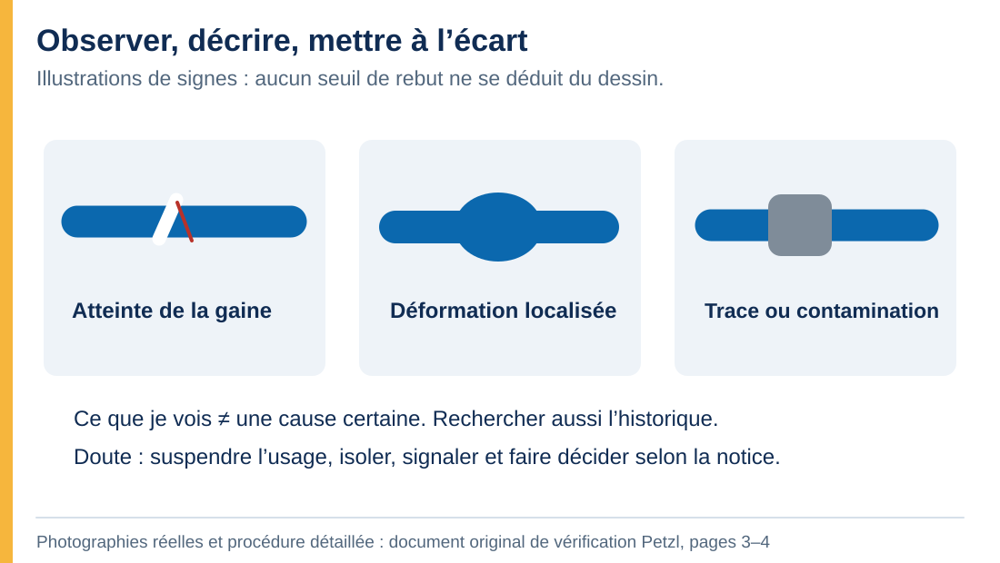

Décrire avant de décider du retrait
Examiner ce qui est visible et tactile, rechercher l’historique, puis appliquer les critères du fabricant.

Observer de vraies photographies dans le document fabricant
Ouvrir la procédure Petzl de vérification des cordes, puis les pages de conseils et d’exemples photographiques. Lire aussi les étapes consacrées à l’historique et à l’examen tactile.
Petzl · Procédure de vérification des cordes
Les photographies restent dans leur document original. Les critères concernent les cordes et conditions visées par cette procédure ; ils ne sont pas transposés à tous les textiles.
Une atteinte visible de la gaine
Décrire la zone, l’étendue visible et l’état des fibres. Une image ne permet pas de palper l’âme ni de reconstituer l’historique.
Comparer ma décision
Suspendre l’usage et appliquer la procédure de mise à l’écart ; la décision de rebut ou de traitement relève de la notice et de la personne compétente.
À tracer : produit et référence, événement ou inconnue, anomalie, statut, personne sollicitée et décision.
Un point dur, mou ou déformé
Sur matériel de démonstration distinct du parc utilisable : rechercher une irrégularité sur toute la longueur selon la méthode prévue. Ne pas provoquer un défaut.
Comparer ma décision
Une gaine d’apparence correcte n’exclut pas une anomalie interne. Isoler le produit et demander une décision compétente.
À tracer : produit et référence, événement ou inconnue, anomalie, statut, personne sollicitée et décision.
Une trace dont l’origine est inconnue
Décrire la trace sans inventer sa cause : produit chimique, chaleur, salissure ou autre événement ne se reconnaissent pas toujours à l’œil. Rechercher l’historique.
Comparer ma décision
L’absence de certitude ne justifie pas la remise en service. Tracer le doute et appliquer la notice.
À tracer : produit et référence, événement ou inconnue, anomalie, statut, personne sollicitée et décision.
Deux niveaux de contrôle à distinguer
Avant chaque emploi : l’utilisateur contrôle l’état, le fonctionnement prévu et les informations utiles. Périodiquement : une personne compétente réalise et trace la vérification selon les exigences applicables. La vérification réglementaire des systèmes concernés date de moins de douze mois ; la notice ou les conditions peuvent exiger un délai plus court.
Après une chute arrêtée, un événement exceptionnel ou un doute : mise à l’écart et traitement selon la notice. Ne pas effacer l’événement par une simple coche « contrôle effectué ».
Grille et trace de l’observation